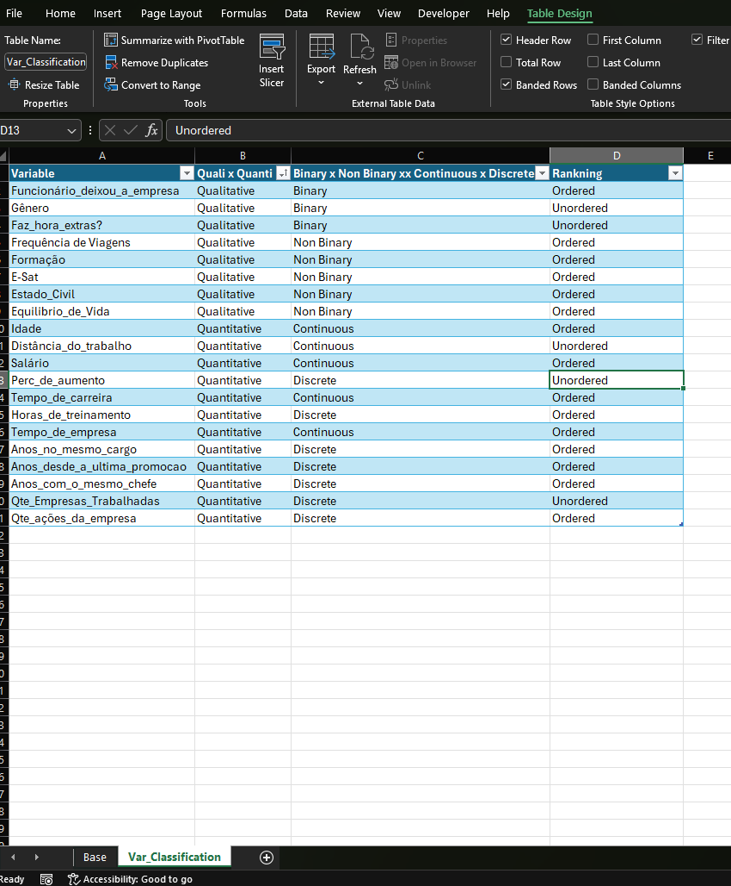
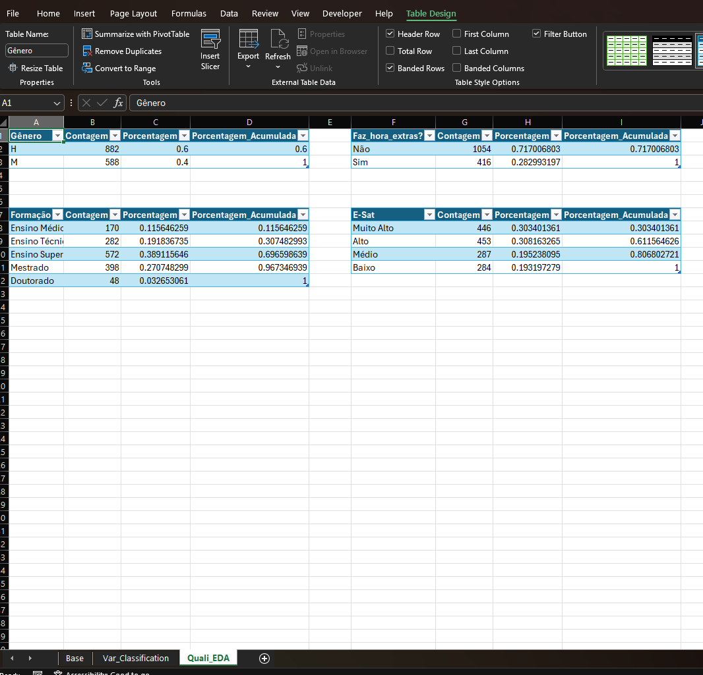
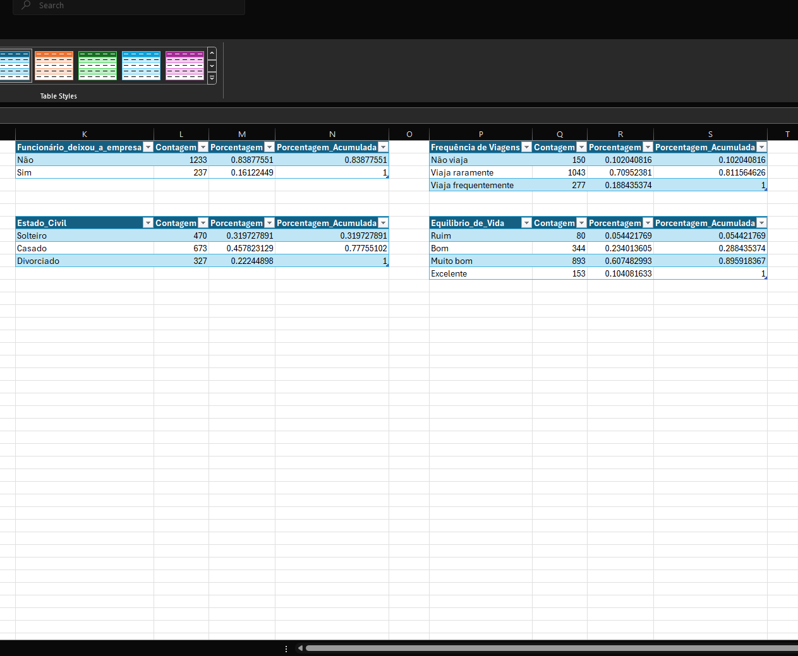
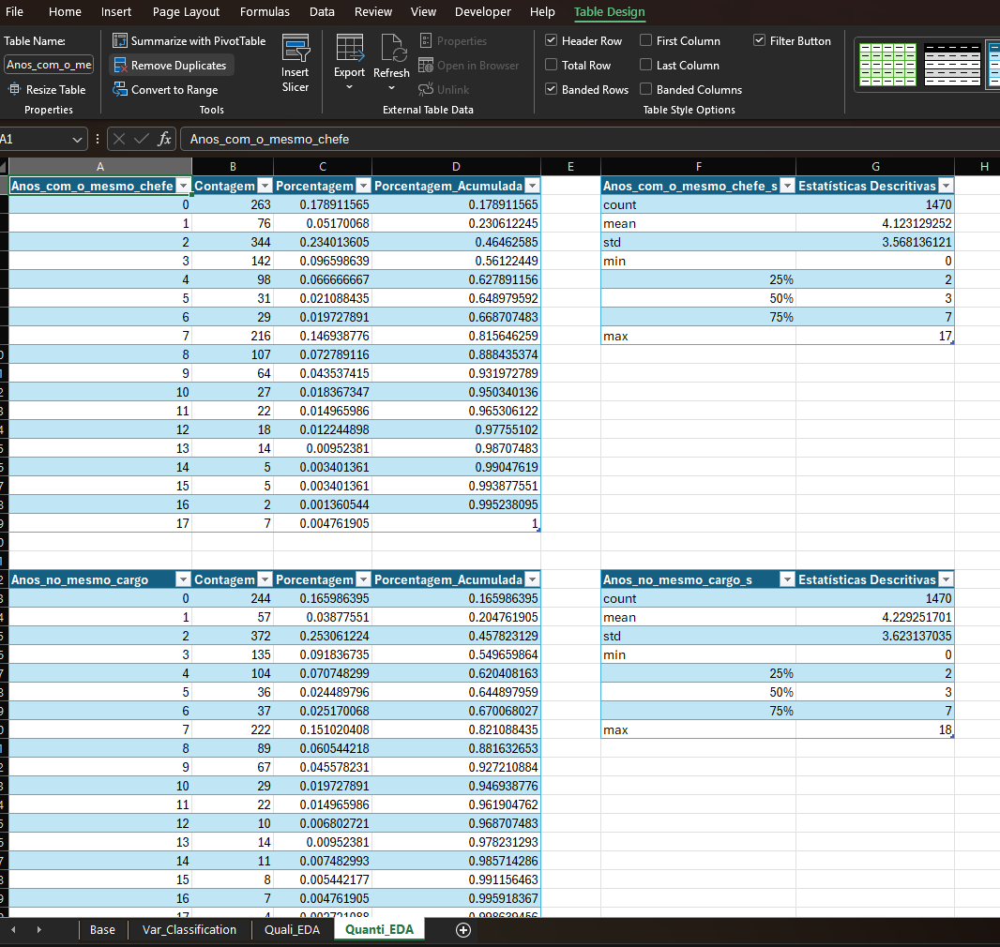
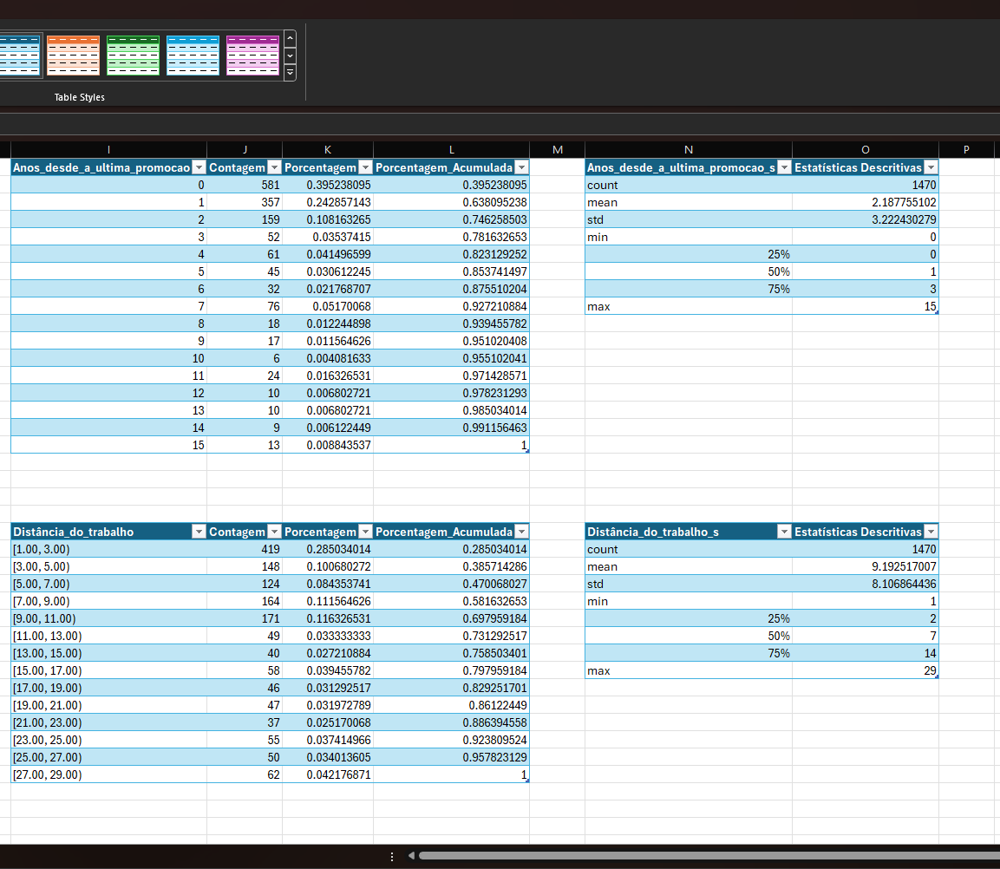
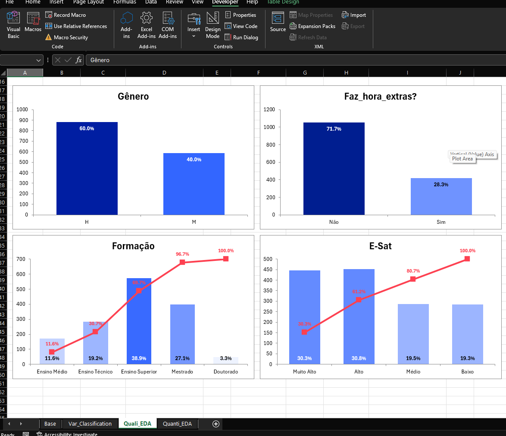
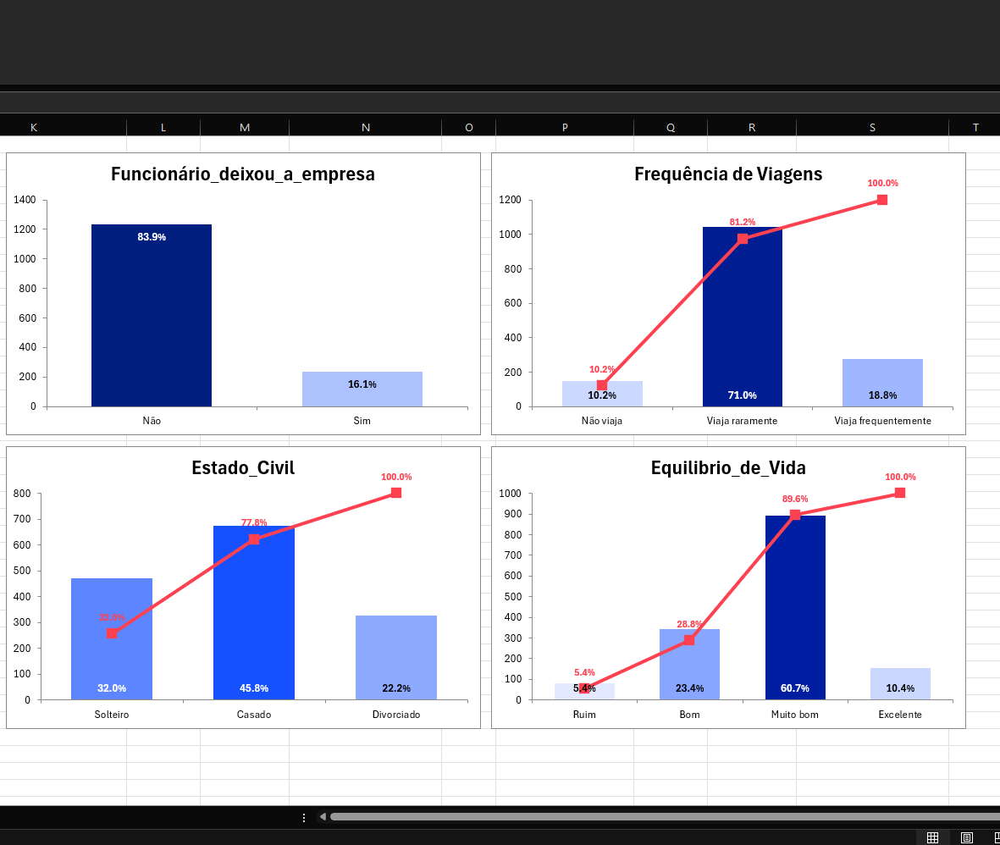
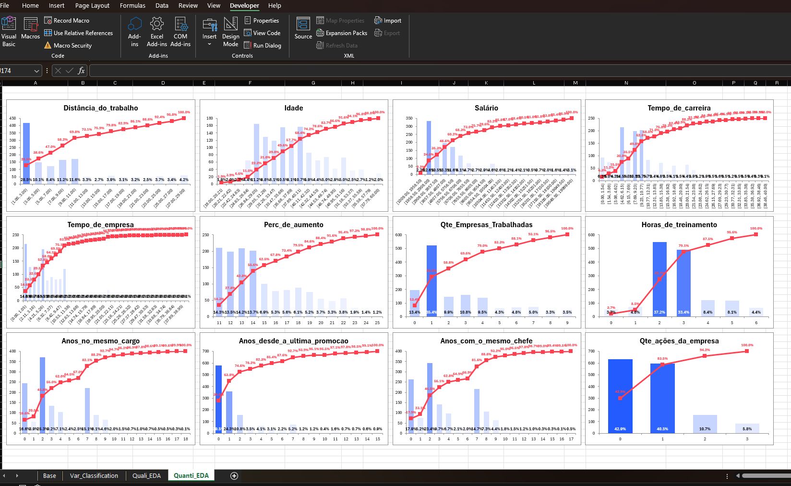

Overview
This framework automates univariate EDA for both qualitative and quantitative variables, generating formatted tables and VBA-triggered charts directly in Excel.
Key Features
Auto Table Generation
Frequency distributions, percentages, and summary statistics.
VBA Integration
Dynamic charts created via macro.
Excel Native
Results stay in Excel tables, fully editable.
Introduction
Let's face it: Excel isn't the best tool for data analysis and manipulation, and it's an even worse place to edit formulas and code. Still, because of its popularity and convenience, it will likely remain a core tool for analysts for years to come.
This project uses Python with xlwings and VBA to automate exploratory analysis in a more developer-friendly workflow: write and iterate in VS Code, then generate tables and charts directly in Excel.
The result is faster, more consistent EDA and fewer manual steps.
The workflow is table-based. After importing the dataset into Excel, the framework generates one or more analysis tables per variable (frequency tables, summary stats, etc.). A VBA macro then reads those tables and creates the corresponding charts on dedicated sheets.
In this example, the framework is demonstrated using data from an employee database. The variables include salary, tenure (time at the company), commuting distance, and similar attributes.
Data Import and Preparation
The data is imported from an Excel table into a pandas DataFrame. In the example below, the table is named data and it lives
on the Base sheet.
Before running the analysis, irrelevant columns (such as an ID field) are removed.
The workbook must be saved as .xlsm (macro-enabled) because the chart generation step runs via VBA macros.
import xlwings as xw
import pandas as pd
file = "---------------.xlsm"
wb = xw.Book(file)
ws = wb.sheets["Base"]
tb = ws.tables
data_df = ws.tables["data"].range.options(pd.DataFrame, header=1, index=False).value
data_df = data_df.drop(columns=["ID"])Variable Classification
Before generating the EDA outputs, variables are classified into qualitative and quantitative groups. Qualitative variables are also tagged as binary and non-binary based on the number of distinct values.
Quantitative variables are divided into discrete and continuous. This project uses a practical definition of continuity based on the behavior of the variable in frequency histograms (binning). A more detailed explanation is provided below.
Variables are further divided into ordered or unordered, depending on whether their categories can be
meaningfully ranked. For example, gender is treated as unordered, while time_at_the_company can be treated as
ordered. It is worth noting that ordering follows from a hierarchy notion and is therefore context-dependent.

Then import the Var_Classification table into Python and sort it (if it isn’t already sorted in Excel).
Var_Classification_table = (
wb.sheets["Var_Classification"]
.tables["Var_Classification"]
.range.options(pd.DataFrame, header=1, index=False)
.value
)
Var_Classification_table = Var_Classification_table.sort_values(
by=["Quali x Quanti", "Binary x Non Binary xx Continuous x Discrete", "Ranking"],
ascending=[True, True, False],
)
Var_Classification_table.reset_index(drop=True, inplace=True)Qualitative Univariate EDA
For qualitative variables, the workflow is:
- Filter qualitative variables from
Var_Classification_table. - Create count tables (frequency) for each variable.
- If a variable is ordered, reorder the table rows according to the desired ranking.
- Add percentages and cumulative percentages.
- Write the tables back to Excel.
Start by filtering and creating the tables:
quali_vars = (
Var_Classification_table.loc[Var_Classification_table['Quali x Quanti'] == 'Qualitative',
'Variable'].to_list()
)
def create_count_tables_no_index(df, var_list):
"""
Creates a dictionary of tables where:
- Index = The category values of the variable
- Column = 'Contagem'
"""
tables = {}
valid_vars = df.columns.intersection(var_list)
for col in valid_vars:
count_df = df[col].value_counts().to_frame(name='Contagem')
count_df.index.name = col
tables[col] = count_df
sorted_dict = {name: tables[name] for name in var_list if name in tables}
return sorted_dict
quali_df_tables = create_count_tables_no_index(data_df, quali_vars)Now let's do the reordering for the Non Binary, Ordered variables:
quali_df_tables["Frequência de Viagens"] = quali_df_tables["Frequência de Viagens"].reindex(\
["Não viaja", "Viaja raramente", "Viaja frequentemente"])
quali_df_tables["Formação"] = quali_df_tables["Formação"].reindex(\
["Ensino Médio", "Ensino Técnico", "Ensino Superior", "Mestrado", "Doutorado"])
quali_df_tables["E-Sat"] = quali_df_tables["E-Sat"].reindex(\
["Muito Alto", "Alto", "Médio", "Baixo"])
quali_df_tables["Estado_Civil"] = quali_df_tables["Estado_Civil"].reindex(\
["Solteiro", "Casado", "Divorciado"])
quali_df_tables["Equilibrio_de_Vida"] = quali_df_tables["Equilibrio_de_Vida"].reindex(\
["Ruim", "Bom", "Muito bom", "Excelente"]) Add percentages:
def add_percentages(tables_dict):
"""
Adds 'Porcentagem' and 'Porcentagem_Acumulada' columns to each table.
"""
for title, df in tables_dict.items():
if "Contagem" not in df.columns:
continue
total = df["Contagem"].sum()
# Porcentagem (% of total)
df["Porcentagem"] = df["Contagem"] / total
# Porcentagem acumulada (Cumulative Percentage)
df["Porcentagem_Acumulada"] = df["Porcentagem"].cumsum()
return tables_dict
add_percentages(quali_df_tables)Finally, write the tables to excel. By default 4 tables per row are shown.
def write_table_grid_xlwings(
tables_dict,
sheet_name,
suffix="",
tables_per_row = 4,
start_row = 1,
start_col = 1,
col_gap = 2,
row_gap = 3,
):
row_offset = start_row
col_offset = start_col
tables_in_row = 0
max_row_end = row_offset
wb = xw.books.active
if sheet_name in [s.name for s in wb.sheets]:
sheet_grid = wb.sheets[sheet_name]
else:
sheet_grid = wb.sheets.add(sheet_name, after=wb.sheets[-1])
for name, df in tables_dict.items():
if df.empty:
continue
safe_name = "".join(ch if ch.isalnum() or ch == "_" else "_" for ch in str(name))
final_table_name = f"{safe_name}{suffix}"
if tables_in_row >= tables_per_row:
row_offset = max_row_end + row_gap
col_offset = start_col
tables_in_row = 0
df.index.name = name
target_range = sheet_grid.range((row_offset, col_offset))
target_range.options(pd.DataFrame, index=True).value = df
tbl_range = target_range.expand()
sheet_grid.tables.add(tbl_range, final_table_name)
max_row_end = max(max_row_end, row_offset + len(df))
col_offset += df.shape[1] + col_gap
tables_in_row += 1
wb.save()
fx.write_table_grid_xlwings(quali_df_tables, "Quali_EDA")

Quantitative Univariate EDA
A similar workflow can be applied to quantitative variables. In addition to frequency tables, summary-statistics tables are created for each variable, including the mean, standard deviation, and quartiles.
Quantitative variables may have too many distinct values to evaluate individually. In such cases, it is useful to group values into bins. Although this is not mathematically rigorous as a definition, the continuous-versus-discrete distinction is used here in a practical sense: whether the variable can be represented clearly without binning, or whether binning is needed for interpretation.
Alongside this practical classification, visually inspecting the distributions can help confirm whether the chosen representation is appropriate.
quanti_vars = (
Var_Classification_table.loc[Var_Classification_table['Quali x Quanti'] == 'Quantitative',
'Variable'].to_list()
)
for var in quanti_vars:
print(var)
print(data_df[var].value_counts())
print("\n")Once the classification has been confirmed, the next step is to create the summary and frequency tables for each variable. Because Excel does not allow two tables with the same name in a single workbook, the suffix “_s” is appended to the names of summary tables to distinguish them from the corresponding frequency tables.
An important motivation for classifying variables in advance is that bin boundaries can then be defined algorithmically instead of manually, for example by using automatic bin selection methods from numerical libraries such as NumPy.
def create_descriptive_stats_tables(df, var_list):
tables = {}
valid_vars = df.columns.intersection(var_list)
for col in valid_vars:
desc_df = df[col].describe().to_frame(name='Estatísticas Descritivas')
tables[col] = desc_df
sorted_dict = {name: tables[name] for name in var_list if name in tables}
return sorted_dict
quanti_summary_tables = create_descriptive_stats_tables(data_df,quanti_vars)
quanti_summary_tables = {f"{k}_s": v for k, v in quanti_summary_tables.items()}Concatenate and sort the Python dicts for frequency tables (continuous/discrete) and summary tables:
import numpy as np
quanti_discrete_vars = (
Var_Classification_table.loc[Var_Classification_table['Binary x Non Binary xx Continuous x Discrete'] == 'Discrete',
'Variable'].to_list()
)
def create_frequency_distribution_tables_discrete(df, quanti_vars):
tables = {}
valid_vars = df.columns.intersection(quanti_vars)
for col in valid_vars:
data = df[col].dropna() # Remove NaNs once for consistency
counts = data.value_counts().sort_index()
freq_df = pd.DataFrame({'Contagem': counts})
freq_df.index.name = col
tables[col] = freq_df
sorted_dict = {name: tables[name] for name in quanti_vars if name in tables}
return sorted_dict
quanti_discrete_df_tables = create_frequency_distribution_tables_discrete(data_df, quanti_discrete_vars)
quanti_continuous_vars = (
Var_Classification_table.loc[Var_Classification_table['Binary x Non Binary xx Continuous x Discrete'] == 'Continuous',
'Variable'].to_list()
)
def create_frequency_distribution_tables(df, quanti_vars, bins="auto"):
tables = {}
valid_vars = df.columns.intersection(quanti_vars)
for col in valid_vars:
data = df[col].dropna()
if data.empty:
continue
bin_edges = np.histogram_bin_edges(data, bins=bins)
counts, actual_edges = np.histogram(data, bins=bin_edges)
bin_labels = [f"[{actual_edges[i]:.2f}, {actual_edges[i+1]:.2f})" for i in range(len(actual_edges)-1)]
freq_df = pd.DataFrame({'Contagem': counts}, index=bin_labels)
freq_df.index.name = 'Intervalo'
tables[col] = freq_df
sorted_dict = {name: tables[name] for name in quanti_vars if name in tables}
return sorted_dict
quanti_continuous_df_tables = create_frequency_distribution_tables(data_df, quanti_continuous_vars)
quanti_discrete_continuous_df_tables = {**quanti_discrete_df_tables, **quanti_continuous_df_tables}
add_percentages(quanti_discrete_continuous_df_tables)
all_quanti_tables = {**quanti_discrete_df_tables, **quanti_continuous_df_tables, **quanti_summary_tables}
all_quanti_tables = dict(sorted(all_quanti_tables.items(), key=lambda x: x[0]))
write_table_grid_xlwings(all_quanti_tables, "Quanti_EDA")

VBA Pareto Charts
Finally, generate Pareto charts for each variable using VBA.
Two functions handle this: GetLowestRow finds the starting row, and Build_Chart sets the chart parameters.
The Draw_Analysis_Charts subroutine calls them.
Bars are labeled with category percentages. Bar colors darken with higher percentages. For non-binary variables, a cumulative percentage line shows the running total (Pareto principle).
Option Explicit
Public Function GetLowestRow(ByVal ws As Worksheet) As Long
Dim lo As ListObject
Dim bottom As Long, maxBottom As Long
maxBottom = 1
For Each lo In ws.ListObjects
bottom = lo.Range.row + lo.Range.Rows.Count - 1
If bottom > maxBottom Then maxBottom = bottom
Next lo
GetLowestRow = maxBottom
End Function
Public Function Build_Chart( _
ByVal lo As ListObject, _
ByVal leftPos As Double, _
ByVal topPos As Double, _
Optional ByVal chartW As Double = 320, _
Optional ByVal chartH As Double = 200, _
Optional ByVal yColName As String = "Contagem" _
) As ChartObject
Dim ws As Worksheet: Set ws = lo.Parent
Dim co As ChartObject
Dim ch As Chart
Dim s As Series
Dim rngX As Range, rngY As Range, rngPct As Range
Dim i As Long
' 1. Validate Ranges
On Error Resume Next
Set rngX = lo.ListColumns(1).DataBodyRange
Set rngY = lo.ListColumns(yColName).DataBodyRange
Set rngPct = lo.ListColumns("Porcentagem").DataBodyRange
On Error GoTo 0
If rngX Is Nothing Or rngY Is Nothing Then Exit Function
' 2. Create the Chart Object
Set co = ws.ChartObjects.Add(Left:=leftPos, Top:=topPos, Width:=chartW, Height:=chartH)
Set ch = co.Chart
With ch
.ChartType = xlColumnClustered
.ChartGroups(1).GapWidth = 75
' Clear all series
Do While .SeriesCollection.Count > 0: .SeriesCollection(1).Delete: Loop
' Add the new series
Set s = .SeriesCollection.NewSeries
With s
.XValues = rngX
.Values = rngY
.Name = yColName
.ApplyDataLabels
If lo.ListRows.Count > 2 Then
.DataLabels.Position = xlLabelPositionInsideBase
Else
.DataLabels.Position = xlLabelPositionInsideEnd
End If
For i = 1 To .Points.Count
If Not rngPct Is Nothing Then
Dim pctValue As Double: pctValue = rngPct.Cells(i, 1).Value
Dim r As Integer, g As Integer, b As Integer
.Points(i).DataLabel.Text = Format(pctValue, "0.0%")
If pctValue > 0.5 Then
r = 0
g = 30 ' Keep a tiny bit of green for depth
b = Round(255 - (pctValue * 155), 0)
Else
r = Round(255 * (1 - (pctValue * 2)), 0)
g = Round(255 * (1 - (pctValue * 1.5)), 0)
b = 255
End If
.Points(i).Format.Fill.ForeColor.RGB = RGB(r, g, b)
With .Points(i).DataLabel.Format.TextFrame2.TextRange.Font
.Bold = msoTrue
If pctValue > 0.3 Then
.Fill.ForeColor.RGB = vbWhite
Else
.Fill.ForeColor.RGB = vbBlack
End If
End With
End If
Next i
End With
If lo.ListRows.Count > 2 Then
Dim sAcc As Series
Set sAcc = .SeriesCollection.NewSeries
With sAcc
.Name = "Acumulado"
.Values = lo.ListColumns("Porcentagem_Acumulada").DataBodyRange
.XValues = rngX
.ChartType = xlLineMarkers
.AxisGroup = xlSecondary
.Format.Line.ForeColor.RGB = RGB(253, 65, 81)
.MarkerBackgroundColor = RGB(253, 65, 81)
.HasDataLabels = True
With .DataLabels
.Position = xlLabelPositionAbove
.NumberFormat = "0.0%"
With .Format.TextFrame2.TextRange.Font
.Size = 9 ' Slightly smaller than bar labels to avoid clutter
.Bold = msoTrue
.Fill.ForeColor.RGB = RGB(253, 65, 81)
End With
End With
End With
With .Axes(xlValue, xlSecondary)
.TickLabels.NumberFormat = "0.0%"
.MinimumScale = 0
.MaximumScale = 1
.TickLabelPosition = xlTickLabelPositionNone
.HasMajorGridlines = False
.Border.LineStyle = xlNone
.MajorTickMark = xlTickMarkNone
.MinorTickMark = xlTickMarkNone
End With
End If
' 4. Formatting
.HasLegend = False
.HasTitle = True
.ChartTitle.Text = CStr(lo.Range.Cells(1, 1).Value)
' Remove Gridlines
On Error Resume Next
.Axes(xlValue).MajorGridlines.Delete
.Axes(xlCategory).MajorGridlines.Delete
On Error GoTo 0
End With
Set Build_Chart = co
End Function
Sub Draw_Analysis_Charts(ByVal sheetName As String, ByVal varList As Variant, _
Optional ByVal chartsPerRow As Long = 4)
Dim wsData As Worksheet
Dim loData As ListObject
Dim chartW As Double, chartH As Double
Dim startTop As Double, startLeft As Double
Dim idx As Long
Dim varName As Variant
' 1. Set the specific worksheet
On Error Resume Next
Set wsData = ThisWorkbook.Worksheets(sheetName)
On Error GoTo 0
If wsData Is Nothing Then
MsgBox "Sheet not found: " & sheetName
Exit Sub
End If
' 2. Clean existing charts
If wsData.ChartObjects.Count > 0 Then wsData.ChartObjects.Delete
' 3. Chart Configuration
chartW = 420
chartH = 250
startLeft = 10
' Position charts below the tables
startTop = (GetLowestRow(wsData) * 15) + 60
idx = 0
' 4. Process the variable list
For Each varName In varList
For Each loData In wsData.ListObjects
' Match table by its top-left header cell value
If loData.Range.Cells(1, 1).Value = varName Then
Call Build_Chart(loData, _
leftPos:=startLeft + ((idx Mod chartsPerRow) * (chartW + 10)), _
topPos:=startTop + ((idx \ chartsPerRow) * (chartH + 10)), _
chartW:=chartW, _
chartH:=chartH)
idx = idx + 1
Exit For
End If
Next loData
Next varName
End Sub
The Draw_Analysis_Charts subroutine takes a sheet name and variable list.
It searches for matching tables, then draws Pareto charts below the last table on the sheet (4 per row as default).
To send the VBA file (saved as "vba_code.bas") to excel from the editor (VScode) use:
import os
bas_file_path = os.path.abspath("vba_code.bas")
wb.api.VBProject.VBComponents.Import(bas_file_path)Now simply filter the desired variables as a list and call the subroutine
To show all the qualitative variables charts, for instance, do:
my_criteria_quali = quali_vars
sheet = "Quali_EDA"
my_macro = wb.macro("Draw_Analysis_Charts")
my_macro(sheet, my_criteria_quali)

Similarly, for all the quantitative variables charts:
my_criteria_quanti = quanti_vars
sheet = "Quanti_EDA"
my_macro = wb.macro("Draw_Analysis_Charts")
my_macro(sheet, my_criteria_quanti)